ようこそ！
NEWPERM のドキュメントサイトへようこそ。左のメニューから、目的の項目を選んでください。Windowsの再インストール手順、BIOSの設定、Windows Defenderの扱い、利用にあたっての重要な注意事項をまとめています。
Windows再インストール
環境に合わせた再インストール手順の一覧です。まずは以下をご確認のうえ、該当する手順に進んでください。
testの場合、Windows を再インストールする前にBIOSをFLASHしてください。
testがアンインストールされていることを確認してください。
（点滅表示はtest専用です）
フォートナイト：必ず通常の再インストールを使用してください。同じPCでHWIDが3回以上BANされた場合は、Intel RAID再インストールまたはAMD RAID再インストールの方法を使用してください。
RUST/APEX + その他のEAC/BEゲーム：Intel RAID再インストールまたはAMD RAID再インストールの方法を使用してください。
VALORANT：Intel RAID再インストールまたはAMD RAID再インストールを使用してください。
CODシリーズ：Intel RAID再インストールまたはAMD RAID再インストールの方法を使用してください。
BIOS FLASH (VA)
VA環境向けのBIOSアップデート(フラッシュ)手順です。マザーボードのメーカーによって使用するツールが異なります。下のタブからメーカーを選んで手順をご確認ください。作業前に必ず電源環境を確認してください。
ASUS（EZ Flash）での手順
- 公式サイトからマザーボードの型番に合ったBIOSファイルをダウンロードし、USBメモリのルート直下に配置します。
- 起動時に Del キー（または F2）を押してBIOS(UEFI)画面に入ります。
- 「Advanced Mode」に切り替え、上部メニューの「Tool」から「ASUS EZ Flash」を選択します。
- 接続したUSBメモリを選択し、対象のBIOSファイルを選びます。
- 内容を確認し「Yes」を選択して更新を開始します。完了まで電源を切らずに待ちます。
- 更新完了後、自動的に再起動します。
ASRock（Instant Flash）での手順
- 公式サイトからBIOSファイルをダウンロードし、USBメモリのルート直下に配置します（解凍不要な場合が多いです）。
- 起動時に F6 キー（または Del / F2 でBIOS画面に入ってから選択）で「Instant Flash」を起動します。
- USBメモリ内のBIOSファイルを一覧から選択します。
- 更新内容（バージョン等）を確認し、実行を選択します。
- 更新完了後、自動的に再起動します。
GIGABYTE（Q-Flash / Q-Flash Plus）での手順
- 公式サイトからBIOSファイルをダウンロードし、USBメモリのルート直下に配置します（Q-Flash Plusを使う場合は指定のファイル名に変更）。
- 起動時に End キーでQ-Flashを起動します（Q-Flash Plus対応機種は電源OFFの状態からでも実行可能です）。
- 「Update BIOS from Drive」を選択し、USBメモリを選びます。
- 対象のBIOSファイルを選択し、更新を開始します。
- 更新完了後、自動的に再起動します。
レノボ（BIOS Update Utility）での手順
- Lenovo Vantageまたは公式サポートサイトから、機種に対応したBIOSアップデートファイル(.exe)をダウンロードします。
- Windows上でファイルを実行し、ウィザードの指示に従って更新を開始します。
- 更新中に自動的に再起動し、BIOS更新処理が実行されます。完了まで電源を切らないでください。
- ノートPCの場合は、ACアダプタを接続した状態で行ってください。
- Windows上で実行できない場合は、Novoボタン（電源ボタン付近の小さな穴）から起動メニューに入り、USBメモリ経由でアップデートする方法もあります。
MSI（M-Flash）での手順
- 公式サイトからBIOSファイルをダウンロードし、FAT32でフォーマットしたUSBメモリのルート直下に配置します。
- 起動時に Del キーでBIOS画面に入り、「M-Flash」を選択します。
- 確認画面で「Yes」を選ぶとシステムが再起動し、Flash専用モードに入ります。
- USBメモリと対象のBIOSファイルを選択し、更新を開始します。
- 更新完了後、自動的に再起動します。
通常の再インストール
一般的な環境向けのWindows再インストール手順です。RAID構成を利用していない場合はこちらをご参照ください。
このプロセスは最大15分で完了します。
事前準備
- 重要なデータのバックアップ
- インストールメディア(USB)の用意
- ライセンスキーの控え
USBメモリを使ってWindowsを再インストールする
Windows 10をダウンロード- 上記のメディア作成ツールをダウンロードするには、「今すぐダウンロード」をクリックしてください。
- メディア作成ツールを管理者として開きます
- 「インストールメディアの作成（USBフラッシュドライブ）」を選択してください。
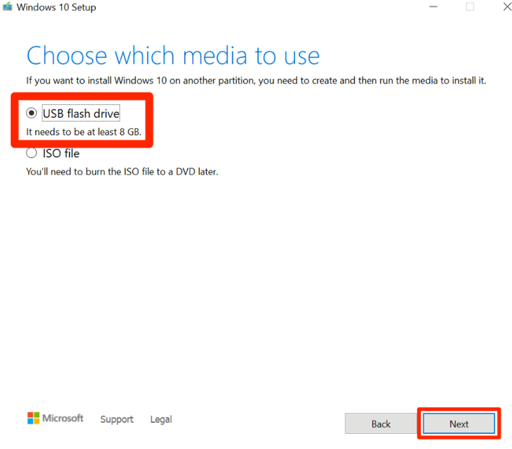
推奨されているオプションをすべて使用して続行し、処理が完了するまでお待ちください。
現在、USBメモリの内容は以下のようになっています。
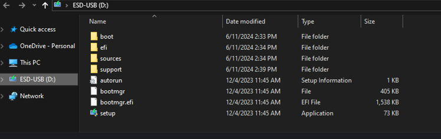
SHIFTキーを押しながら「再起動」をクリックし、そのままSHIFTキーを押し続けてください。
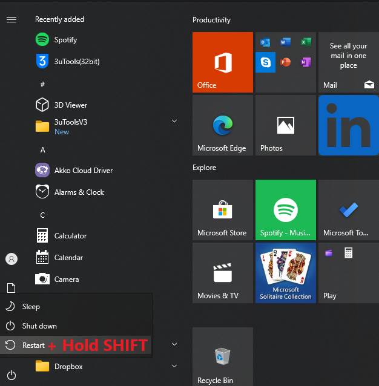
「デバイスを使用する」を選択し、USB（「フラッシュドライブ」とも呼ばれます）を選択します。
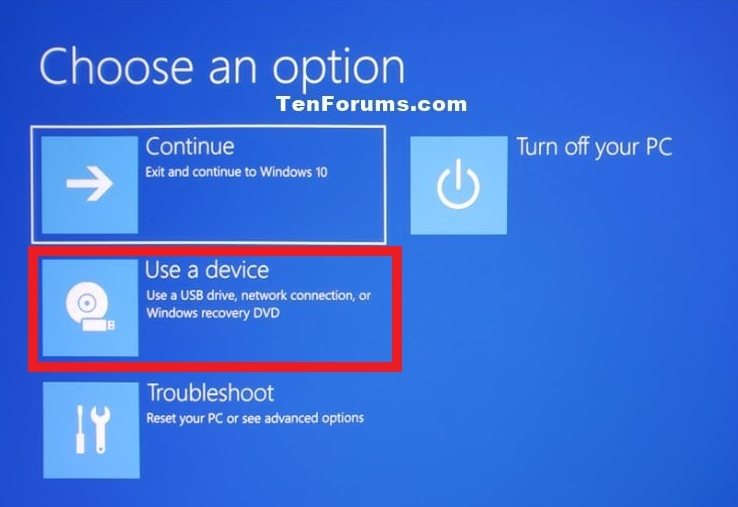
Windows 10 Pro を選択してください（重要！）
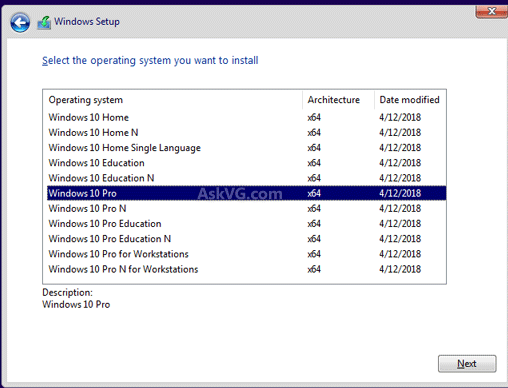
「プロダクトキーを持っていません」を選択してください（これは問題ありません）。
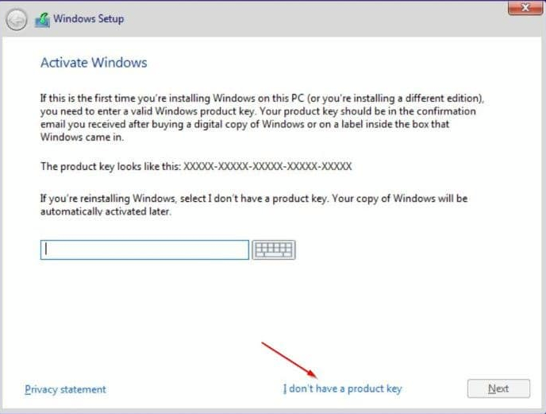
カスタム：Windowsのみインストール（詳細設定）を選択してください
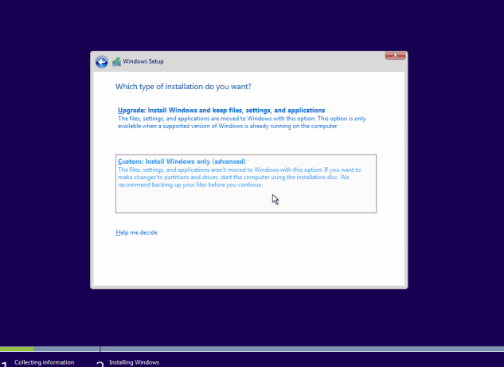
ディスクバイパス手順！
- SHIFTキーとF10キーを同時に押してください（コマンドプロンプトが表示されます）。
- 次に diskpart をCMDに書き込む
- 次に、list disk をCMDに入力してすべてのドライブを表示します。
- select disk 'X'（X = ディスク番号）と入力し clean、USB以外のすべてのディスクに対して書き込みます。
例えば、ほとんどの人はディスクを1つしか持っていません。その場合は、「select disk 1」と入力し、「clean」と入力します。ドライブが2つある場合は、「select disk 2」と入力し、「clean」と入力します。すべてのディスクに対して同様の手順を繰り返します。
これで「ディスクのクリーンアップに成功しました」または「成功」に関連する何らかのメッセージが出力されるはずです。
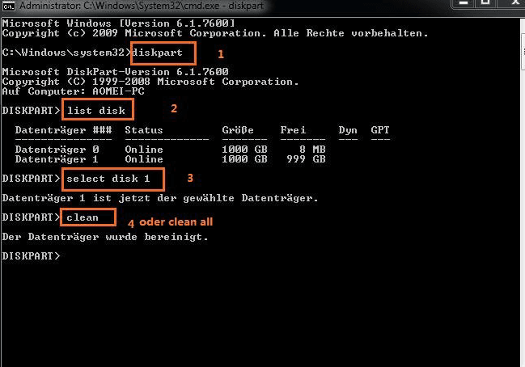
コマンドプロンプトを閉じて「更新」をクリックしてください。以下のようになっていることを確認してください。
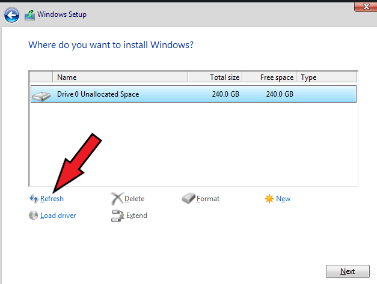
- メインドライブ（未割り当て領域）を選択し、「次へ」をクリックします。
- インストールプロセスが開始されますので、オフラインアカウントを作成してください！
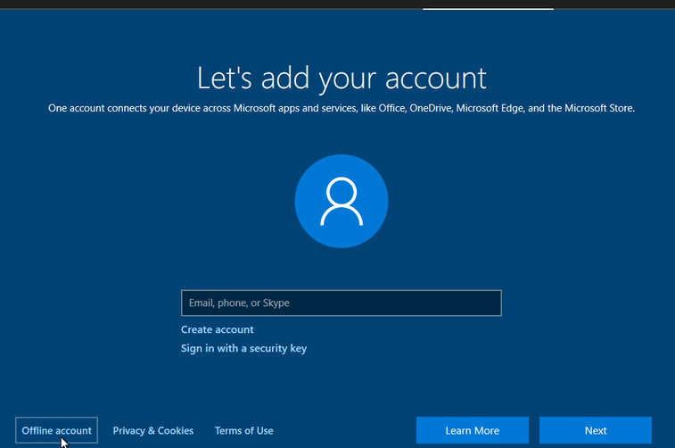
プライバシーに関する質問や設定をすべてオフにする
- オフラインアカウントまたは新しいMicrosoftアカウントを作成してください。古いアカウントにはログインしないでください。
- OneDrive、GeForce Experience、またはLogitech G Hubにログインしないでください。
- エラーを防ぐために、vc_redist.x64.exeをインストールしてください。
RAID再インストール(AMD)
AMDチップセットでRAID構成を利用している環境向けの再インストール手順です。
この再インストールは、これは重要であり、ほぼ99%の確率で成功します。
要件
- 8GBのストレージ容量を持つUSBメモリ（最大32GBまで対応）
- コンピュータの一般的な操作方法を十分に理解している
1 | Windowsインストール
Windows 10 ダウンロードページを開くWindows USBを作成する
メディア作成ツールをダウンロードして管理者として実行し、「インストールメディア（USBフラッシュドライブ）の作成」を選択します。推奨されるオプションをすべて選択して続行し、しばらくお待ちください。

2 | AMD RAIDファイルをUSBに追加する
RAIDファイルをダウンロード携帯で写真を撮ってください
携帯電話で写真を撮り、Disk serial checker.exeで確認してください。
お使いのUSBポートは、以下のような形状をしているはずです（チップセットによってAM4またはAM5のいずれかになります）。
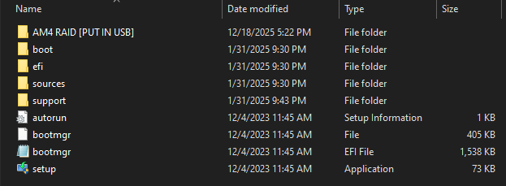
ネットワークドライバー
Windowsを再インストールする際、ほとんどの最新システムは基本的なイーサネットドライバを自動的に検出してインストールします。ただし、場合によってはネットワークドライバを手動でダウンロードしてインストールする必要があるかもしれません。ネットワークドライバ（LAN）は、お使いのマザーボードのモデルに対応したものをダウンロードしてください。例えば、Googleで「Asus B550 ネットワークドライバ」と検索し、念のためUSBドライブに保存しておくと、あらゆるリスクを排除できます。
完了したら、USBメモリが上記のスクリーンショットのようになったら、コンピュータを再起動し、BIOSを起動してください。
BIOSを起動する方法（動画）
4 | BIOSでRAIDモードを有効にする
BIOSに入ったら、以下の手順に従ってください。
- Advanced > Integrated Peripherals (or) Storage Configurations
- SATA Mode set to > "RAID" / NVME Mode set to > "RAID"
- Save & Exit BIOS — get back into BIOS again after コマンドラインで
5 | RAID設定ビデオ
BIOS画面に戻ったら、こちらのRAID設定ビデオをご覧ください6 | オフラインアカウントを作成する
Windows 11では、通常のセットアップ方法ではオフラインアカウントを作成できなくなりました。新しいMicrosoftアカウントを作成するか、YouTubeで「Windows 11 最新オフラインアカウント作成方法」を検索して、現在の回避策を探してください。回避策の一つとして、その手順に進んだらインターネット接続を切断する方法があります。
7 | プライバシー設定をオフにする
プライバシーに関する質問や設定をすべてオフにしてください。
RAID再インストール(INTEL)
INTEL専用のチュートリアルです。Intelチップセットの RST (Rapid Storage Technology) でRAID構成を利用している環境向けの再インストール手順です。
この再インストール方法を強くお勧めします！AMDの場合と同様、これは重要であり、ほぼ99%の確率で成功します。
要件
- 8GBのストレージ容量を持つUSBメモリ（最大32GBまで対応）
- コンピュータの一般的な操作方法を十分に理解している
- Intel RST対応マザーボード（互換性チェッカーで確認済み）
Intel RAIDとの互換性
1 | WINDOWS USBを作成する
Windows 10をダウンロード- 上記のメディア作成ツールをダウンロードするには、「今すぐダウンロード」をクリックしてください。
- メディア作成ツールを管理者として開きます
- 「インストールメディアの作成（USBフラッシュドライブ）」を選択してください。
- 推奨されているオプションをすべて使用して続行し、処理が完了するまでお待ちください。
2 | INTEL RAIDファイル
ドライバーのダウンロード ガイドをご覧くださいコンピュータを再起動し、BIOSに入ります（BIOSへの簡単な起動方法を参照）。アドバンストモードに移動し、SATA/NVMeストレージ構成設定を探します。
場所はマザーボードによって異なります。以下の一般的なパスを確認してください。
- 詳細モード > PCHストレージ構成（最も一般的な構成）
- 詳細モード > ストレージ構成
- 詳細モード > SA (システムエージェント) > VMD コントローラー
- 詳細モード > オンボードデバイス/統合周辺機器
- 詳細モード > VMDコントローラー
ストレージ設定を見つけたら、以下のオプションを設定してください。
「VMDコントローラー」オプションが表示された場合は、それを有効にして、以下のSATAモード設定はスキップしてください。
- A | SATAモード/コントローラー > RAIDモード/RST制御/Optaneモード
- B | M.2_1 RST PCIEストレージRAIDサポート > 有効 / RST制御
- C | M.2_2 RST PCIEストレージRAIDサポート > 有効 / RST制御
マザーボードによっては名称が異なる場合がありますので、常識的に判断してください。
「ブート」タブに移動して設定します。
- ブート > CSM > 無効
CSMが見つからない場合は、代わりにUEFIが有効になっていることを確認してください。
BIOSを保存して終了し、再度BIOSに入ってください！
- オフラインアカウントを作成するか、新しいMicrosoftアカウントを作成してください。古いアカウントにはログインしないでください。
3 | Intel RSTでRAIDボリュームを作成する
BIOSに戻ったら、Advanced > Intel(R) RST > Create RAID Volume の順に移動してください。
- 名前 > お好きなものをお選びください
- RAIDレベル > RAID0（ストライプ）
- ディスクを選択 > RAIDを構成するディスクを選択してください（異なる種類のディスクを混在させることはできません）
- ボリュームの作成 > クリックしてアレイを作成します
BIOSを保存して終了し、Windows USBが接続されていることを確認してください。Windowsセットアップ画面が表示されるはずです。

4 | Windowsのインストール
- 必要に応じて言語設定を変更し、「次へ」を押してください。
- プロダクトキーを求められた場合は、「プロダクトキーを持っていません」を選択してください。
- Windows 10/11 Pro バージョンを選択してください | 重要
- 利用規約に同意して「次へ」を押してください
「Windows をどこにインストールしますか？」のステップで、「ドライバーの読み込み」をクリックします。
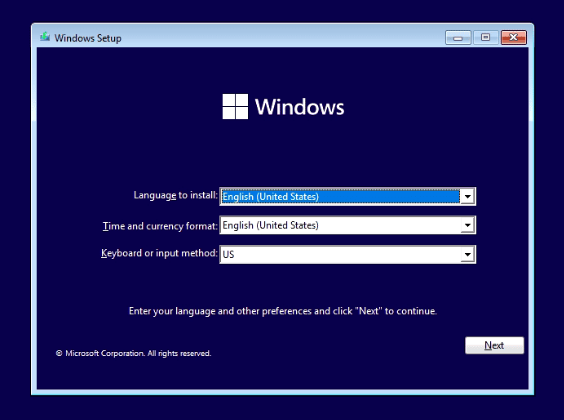
- ポップアップで「参照」をクリックします。
- USBメモリの場所へ移動してください。
- Intel RSTドライバーが入っているフォルダーを選択し、「OK」をクリックします。
Ctrl + Aを押してすべてのドライバーを選択し、次に「次へ」をクリックします。

Windowsをインストールするディスクを選択し、「次へ」をクリックしてください。インストールプロセスを続行してください。インストールプロセスが開始されます。オフラインアカウントを作成してください。
Windows 11では、通常のセットアップ方法ではオフラインアカウントを作成できなくなりました。新しいMicrosoftアカウントを作成するか、YouTubeで「Windows 11 最新オフラインアカウント作成方法」を検索して、現在の回避策を探してください。回避策の一つとして、その手順に進んだらインターネット接続を切断する方法があります。
5 | プライバシー設定を無効にする
プライバシーに関する質問や設定をすべてオフにしてください。
BIOS 設定
推奨されるBIOS設定項目です。設定変更前に現在の値をメモしておくことをおすすめします。
BIOSでTPMを無効にする
BIOS設定画面を開き、以下の手順に従ってください。
BIOSに簡単に起動する方法トラステッドコンピューティングモジュール(TPM)を無効にする：メーカーごとの手順は下のタブからご確認ください。
その他のマザーボード
お使いのマザーボードに対応したTPM無効化方法を解説したYouTube動画を探してみてください。
Windows defender
Windows Defenderに関する設定・確認事項をまとめています。
Windows Defenderを手動で無効にする
- 「スタート」を選択し、「Windowsセキュリティ」と入力します。
- 検索結果からWindowsセキュリティアプリを選択し、「ウイルスと脅威の防止」に移動して、「ウイルスと脅威の防止の設定」の下にある「設定の管理」を選択します。
- リアルタイム保護をオフにする
dControlを使用してWindows Defenderを無効にする
dControlをダウンロード（447.5KB）- dControlをダウンロードしてください（上記参照）
- ファイルを解凍する
- dControl.exeを実行します。
- Windows Defenderを無効にする
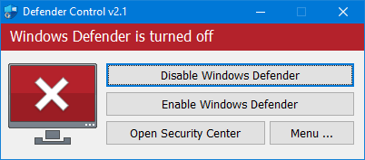
重要注意事項
ご利用前に必ずお読みください。
Windows設定
Windows環境で確認・調整しておきたい設定項目をまとめています。
確認すべき項目
- 電源オプション(スリープ/高速スタートアップ)
- Windows Update の設定
- ユーザーアカウント制御(UAC)
- プライバシー設定
ダウンロード
2C / B2 関連ツールのセットアップ手順です。
ステップ1：WinRARをインストールする
- WinRARは以下のリンクからダウンロードできます：WinRARダウンロード
- ダウンロード後、ファイルを開いて画面の指示に従ってください。
- 「OK」をクリックしてインストールを完了してください。
ステップ2：ローダーをダウンロードする
ダウンロード（更新日：2026年7月11日 | v4.9.0）- バックグラウンドで実行されているすべてのアプリケーションとウイルス対策ソフトを閉じてください。
- Edgeをデフォルトブラウザとして使用していないことを確認してください。
- ローダーを管理者として実行してください。
- GPU ドライバー (AMD/NVIDIA) がインストールされていることを確認し、GEFORCE で新しいアカウントを作成してください。
起動
起動方法についてのページです。お使いのPCに合わせてタブをお選びください。
- downloadしたファイルをWinRARで展開してください
- ファイル内にあるBrave.exeを管理者実行
- ライセンスキーを入力します
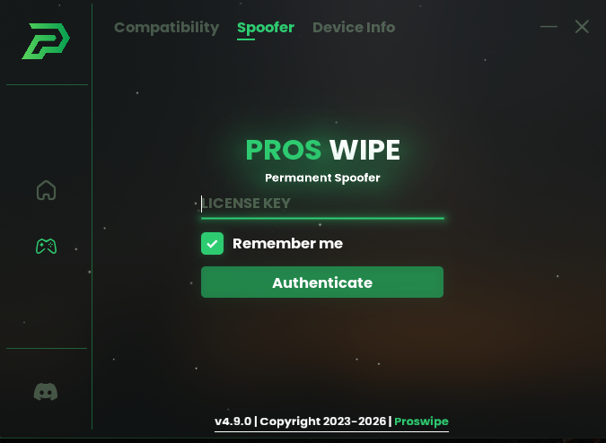
- ログイン後、Device Infoにあるものをスクリーンショットしてください
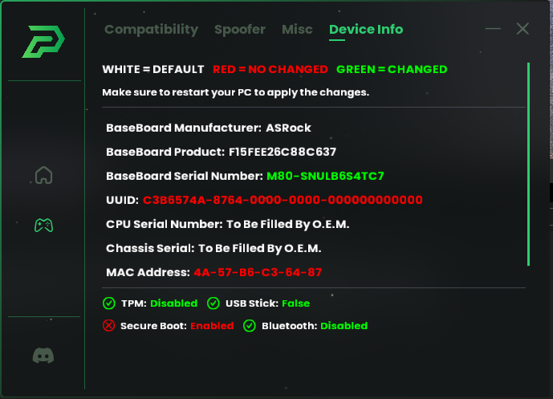
- TESTタブに戻り、PERMANENT SP00Fを押します。
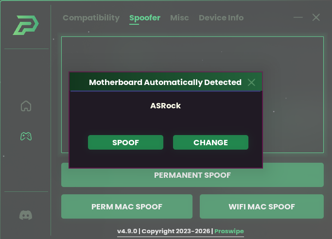
- 使用しているマザーボードを選択してください。完了したらPCを再起動します。
- 再度ファイルを開く
- PERMANENT MACを押します
- 再度Device Infoを開き、すべて緑色になっているかを確認してください。
初めに
- USBメモリをコンピュータに接続してください（容量は32GB以下である必要があります）。
- WindowsエクスプローラーでUSBドライブを右クリックし、「フォーマット」をクリックします。
- ファイルシステムを「FAT32」に変更し、開始をクリックして待ちます。
ロック解除設定
このファイルをダウンロードして解凍し、USBメモリに保存してください。
HP FILES.rar をダウンロードUSBメモリはこんな感じになっているはずです

パソコンを再起動してBIOSに入ってください。HPの場合はF9キーです。再起動中にF9キーを何度も押してください。
- 以下のような画面が表示されるはずです（表示内容は異なる場合があります）。
- 「EFIからファイルを読み込む」を選択してください。
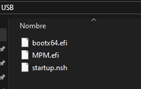
次にUSBを選択してください
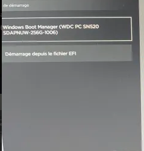
次に「bootx64.efi」を選択してください。
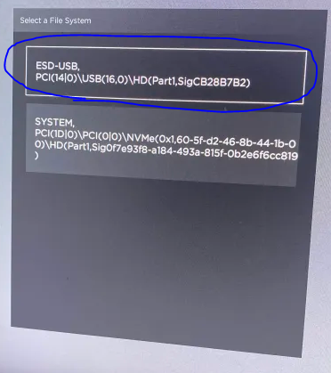
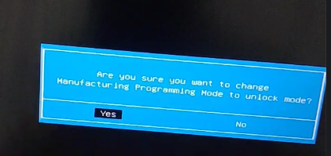
すると、このような画面が表示されますので、「はい」を押してください。
これでWindowsが再び起動しますので、USBメモリを取り外してください。Windowsが起動しない場合は、USBメモリを取り外してしばらくお待ちください。
てｓｔ
インターネット
ネットワークアダプターの設定手順です。
イーサネット以外を無効にする
Windowsキー + Rキーを同時に押し、ncpa.cplと入力して「OK」をクリックします。（これで、イーサネット以外のすべてを無効にします。）
- 使用している接続を右クリックし、「プロパティ」をクリックします。
- 設定を以下のように変更してください。
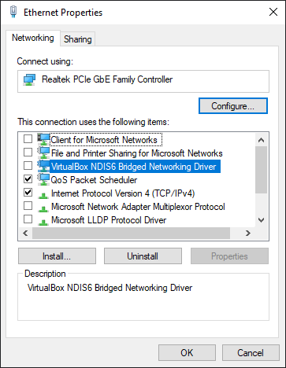
ネットワークアダプターの詳細設定
- Windowsキー + Rキーを押し、devmgmt.mscと入力して「OK」をクリックします。（次に、ネットワークアダプターの矢印をクリックします。）
- 使用している接続を右クリックし、「プロパティ」をクリックします。
- 「詳細設定」タブに移動してください。
- 以下の設定を検索し、次のように設定してください（一部の設定が欠落している場合は、スキップしてください）。
必須手順：手動で行ってください
パソコンを再起動してください。
再度管理者としてCMDを開き、以下のコマンドを実行してください。
パソコンを再起動してください。
追加の安全対策
作業時に取っておきたい追加の安全対策をまとめています。
周辺機器の設定
🔻 ダウンロードリンクはこちら非表示デバイスを無効にする
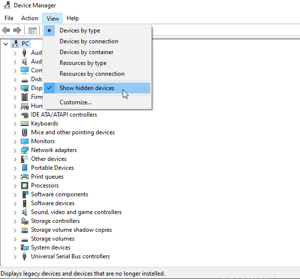
灰色になっているものをすべて削除してください。例えば、（このUSB DISK USB Deviceは灰色です）。ディスクだけでなく、すべての灰色のデバイスに対してこれを行ってください。
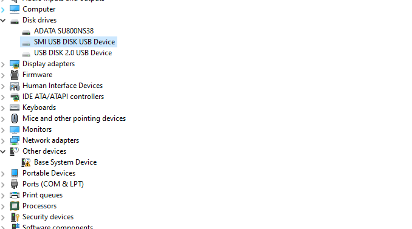
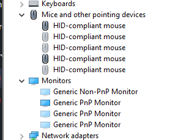
VPNの使用
VPNの必要性とおすすめのVPNサービスについてまとめています。
Fortnite（1週間）、Rust（ルーターのリセットまたはIPアドレスの変更まで永続的に）、およびEFTなどのサーバー管理者がいるゲームではVPNが必要です。その他のEAC/BEゲームではVPNが必須ではない場合もありますが、最初の1週間はVPNを使用することをお勧めします。カジュアルな保護には、Windscribeが10GBの無料データを提供しており、これは十分な選択肢であり、ほとんどの場合1週間で十分です。
おすすめのVPN
- パケット損失が少ない
- 無料10GBトライアル
- https://windscribe.com/
Windscribeを「ステルスモード」で使用し、ファイアウォールが「自動」に設定され、有効になっていることを確認してください。
スクランブル機能を有効にしたOpenVPNプロトコルとUDP接続タイプを使用してください。

仕上げ
作業を完了する前の最終チェックリストです。すべての項目を確認してください。
- Windowsは、通常インストールまたはRAIDを使用して正しく再インストールする必要があります。
- その他タブからWindowsアクティベーターを使用し、完了後にローダーとフォルダを必ず削除してください。
- すべてのシリアル番号は緑色でなければなりません（デバイスタブの白色のシリアル番号を除く）。
- Wi-FiとBluetoothは、使用しない場合は「利用不可/無効」に設定する必要があります。
- ネットワークのフラグ解除手順は、すべてのアダプタで完了する必要があります。
- イーサネットでは、永続的なMACスプーフィングが実行されている必要があります。
FNトーナメント
Fortniteトーナメント参加時のアカウント要件と、TPMまわりの対処法です。
アカウント要件
- トーナメントで過去に一度もキックされたことのないアカウントでなければなりません。
- Freshアカウントを新規作成するか、既に作成済みのアカウントを使用してください。
ステップ1：まずPowerShellの回避策を試してください
TPMが有効になっていて準備完了状態であれば（tpm.mscで確認）、PowerShellで以下のコマンドを実行してください。
この操作を実行すると（Clear-Tpm）、TPM シリアル番号が照会できなくなります。つまり、TPM は実質的に無効になりますが、Fortnite は有効になっていると認識します。そのため、この回避策が有効になります。これは、ほとんどのAMDユーザーで有効な、不具合のあるシステムです。この影響を受けている場合は、FortniteのTPMチェックがシステム上でバグっているためTPMシリアル番号を取得できないので、なりすましを試みても意味がありません。Fortniteがこの矛盾したチェックを修正しない限り、この問題は解決しません。
遅延禁止
作業前後に注意すべき項目をまとめています。
残念ながら、人々が最も予想していなかった弱点が今、狙われています。コントローラーがBANの原因になるのでしょうか？はい、コントローラーを接続すると次の試合からBANされます。これは、マウス、ヘッドセット、コントローラーなどのデバイスが周辺機器であるためです。LowKeyはこれらのデバイスを偽装できますが、システムレベルでのみ可能で、シリアル番号を永久的に上書きすることはできません。詳細については、こちらの説明ページをご覧ください。🙌
対象デバイス：
- ワイヤレスマウス（Bluetooth、USB）
- ワイヤレスヘッドセット（Bluetooth、USB）
- ワイヤレスキーボード（Bluetooth、USB）
- ワイヤレスコントローラー（Bluetooth、USB）
フルパーマネント MAC 変更なし
作業前後に注意すべき項目をまとめています。
RealtekまたはIntelのアダプターを搭載していて、以前はPERM MACオプションを使用してMACの設定を変更できていたのに、今はできなくなった場合、おそらく制限を超えてしまった可能性があります。
推奨される恒久的な解決策
- USB 3.0 イーサネット アダプターを約10ドルで購入します。
- このアダプターには、独自のフラグのない工場出荷時のMACアドレスを持つ独自の内部チップが搭載されています。
- 使用方法：アダプターをUSB 3.0ポートに差し込み、イーサネットケーブルを接続するだけです。
- 重要：初めて接続したときに、スプーフィングソフトウェアを実行する必要はありません。アダプター自体が、箱から出してすぐに新しいクリーンなネットワークIDを提供します。
- 今後、再びブロックされた場合は、EFUSEが再びいっぱいになるまで、このアダプターの永続MACスプーフィング機能を約10～13回使用できます。
.BATファイルを管理者として実行し、もう一度MACアドレスのなりすましを試してください。
del mac.rar をダウンロードよくあるエラー修正
作業中によく発生するエラーと対処法をまとめています。
Windowsの時刻が同期されていることを確認してください。
- 設定を開きます。
- 「時刻と言語」を選択します。
- 「日付と時刻」をクリックします。
- 「時計を同期する」オプションの下にある「今すぐ同期」ボタンを選択します。
- バックグラウンドで実行されているすべてのアプリケーションを無効にしてください。
- デバッガー、モニタリングツール、インジェクターが実行されていないことを確認してください（削除または終了してください）。
- すべてのウイルス対策ソフト（外部のものも含む）が無効になっていることを確認してください。
- コア分離を無効にする（Windowsセキュリティアプリを開き、「デバイスセキュリティ」＞「コア分離の詳細」に移動し、「メモリの整合性」をオフに切り替える）。
- PCを再起動した後も含め、すべてのウイルス対策ソフトが無効になっていることを確認してください。
- 信頼済みプラットフォームモジュール（TPM）を無効にしてみてください。
MSI（Intel 00:00 / AMD 01:05）
Asrock（Intel 00:00 / AMD 01:35）
GIGABYTE（Intel 00:00 / AMD 01:50）
Edgeブラウザをデフォルトブラウザとして使用しないでください。Braveなどの他のブラウザを使用してください。
これらはどれも役に立ちませんでしたか？
- VPNを使用する
こちらをお読みください：https://pastebin.com/ad1KMWpr
BIOSを起動し、以下の設定になっていることを確認してください：
- ブートモード → UEFI
- CSM → 無効
それでもFAT32 UEFIボリュームに表示されない場合は、Discordでサポートチケットを開いてください。
完了
お疲れさまでした！全てのステップが完了しました。
- 終了後はローダーなど全ての関連ファイルを完全に削除してください。
- 一つでも手順を間違うと失敗します。失敗した場合の返金はできません。